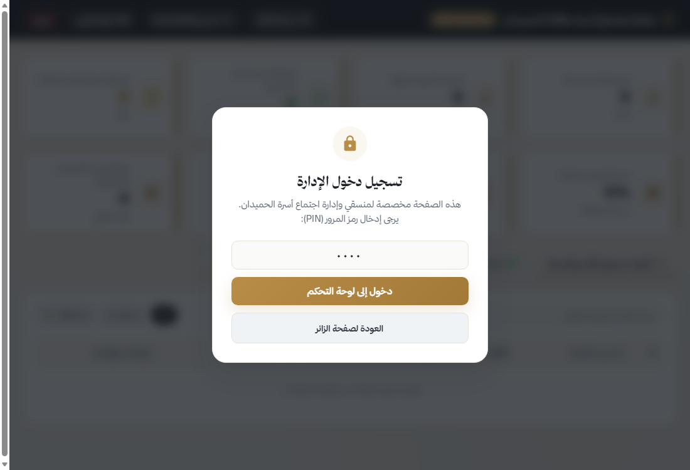
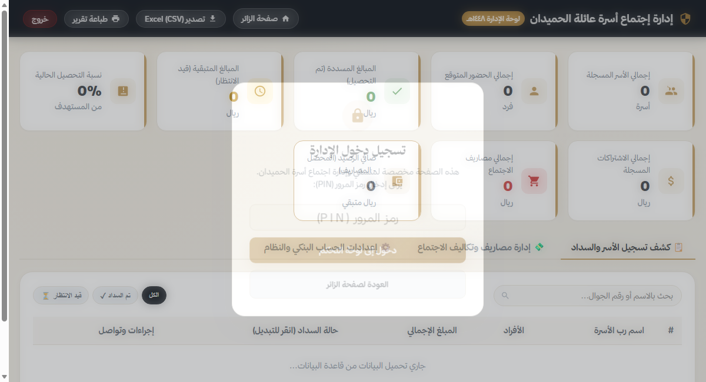
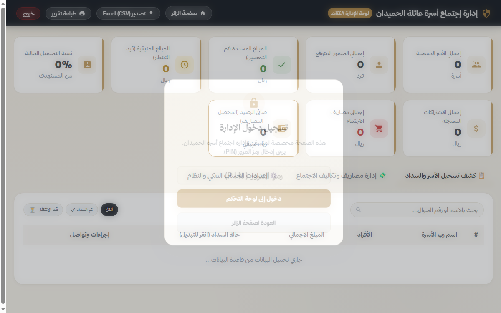
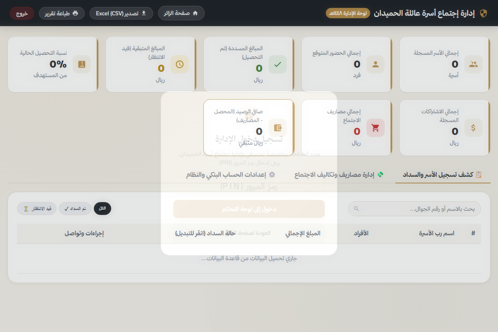
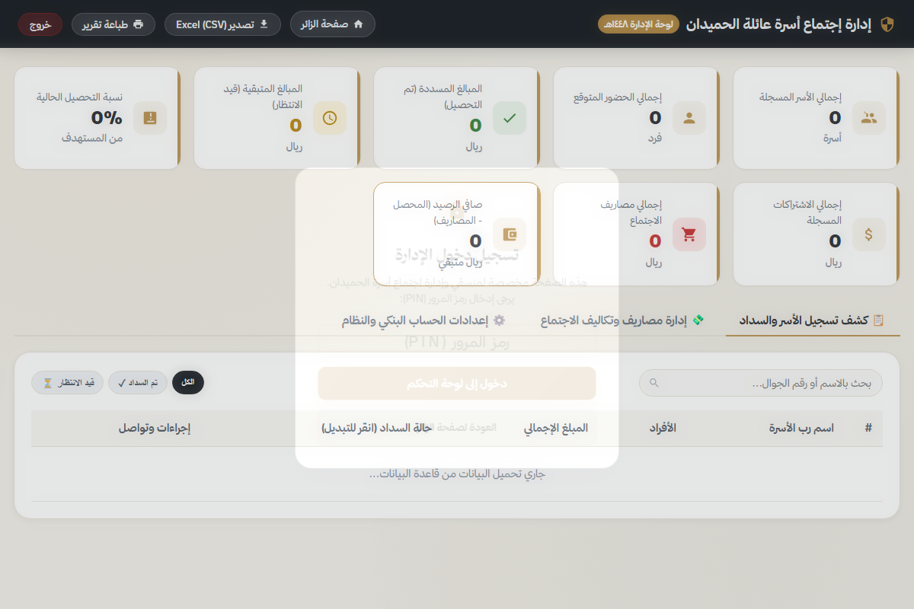

حماية لوحة التحكم برمز PIN لمنع وصول الزوار العاديين إلى الكشوفات الشاملة

متابعة الدخل الفعلي، الاشتراكات المتبقية، والمصروفات أولاً بأول بتحديث فوري

تغيير حالة السداد بنقرة زر والتواصل المباشر مع أرباب الأسر عبر الواتساب

إمكانية تغيير التاريخ والموقع واسم القاعة لتتحدث سحابياً فوراً لدى جميع الزوار

توثيق نفقات القاعة والضيافة وتنزيل تقرير مالي كامل بضغطة زر واحدة
